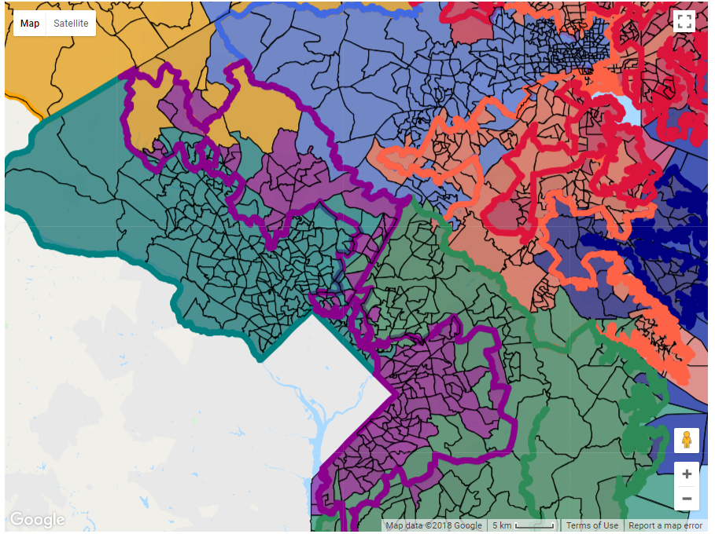

Landing page for the district generator

GUI after logging in and selecting the state of Maryland. Precinct boundaries are visible. Districts are organized by color.
Setting a few objective measures (will redistrict based chosen measures) and hovering over a precinct, which brings up an info window
Zoomed in view of the state of Maryland without redistricting
View of Maryland after a few minutes of redistricting

Pressing the 'Display Original' button will overlay an exaggerated outline of the original districts so you can see the redistricting changes
Updated info window after redistricting of the precinct referenced in an earlier image